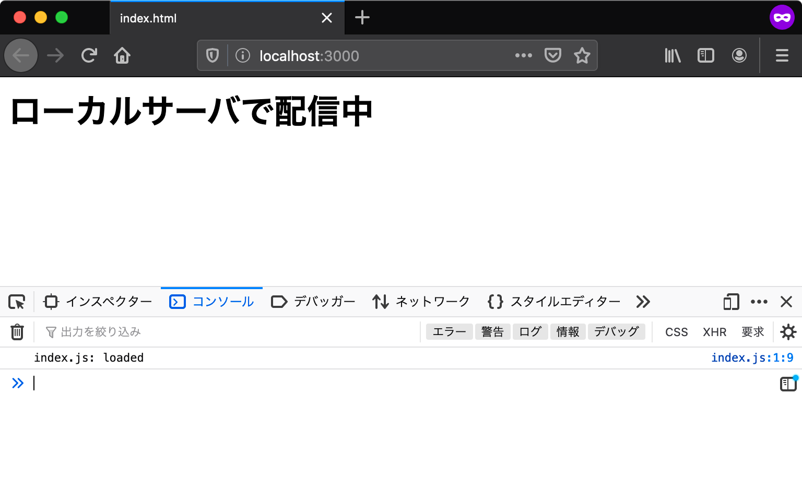

アプリケーション開発の準備
これまでに学んだJavaScriptの基本構文は、実行環境を問わずに使えるものです。 しかしこの後に続くユースケースの章では、具体的な実行環境としてウェブブラウザとNode.jsの2つを扱います。 また、ブラウザで実行するアプリケーションであっても、その開発にはツールとしてのNode.jsが欠かせません。 このセクションではユースケースの学習へ進むために必要なアプリケーション開発環境の準備をします。
Node.jsのインストール
Node.jsはサーバーサイドJavaScript実行環境のひとつで、次のような特徴があります。
- ウェブブラウザのChromeと同じV8 JavaScriptエンジンで動作する
- オープンソースで開発されている
- OSを問わずクロスプラットフォームで動作する
Node.jsはサーバーサイドで使うために開発されました。 しかし今ではコマンドラインツールやElectronなどのデスクトップアプリケーションにも利用されています。 そのため、Node.jsはサーバーサイドに限らずクライアントサイドのJavaScript実行環境としても幅広く使われています。
Node.jsは多くの他のプログラミング言語と同じように、実行環境をマシンにインストールすることで使用できます。 公式のダウンロードページから、開発用のマシンに合わせたインストーラをダウンロードして、インストールしましょう。
- ダウンロードページのURL: https://nodejs.org/en/download/
Node.jsにはLTS（Long-Term Support）版と最新版の2つのリリース版があります。 LTS（Long-Term Support）版は2年間のメンテナンスとサポートが宣言されたバージョンです。 具体的には、後方互換性を壊さない範囲でのアップデートと、継続的なセキュリティパッチの提供が行われます。 一方で、最新版はNode.jsの最新の機能を使用できますが、常に最新のバージョンしかメンテナンスされません。 ほとんどのユーザーは、LTS版を用いることが推奨されます。Node.jsでの開発が初めてであれば、迷わずにLTS版のインストーラをダウンロードしましょう。 この章では執筆時点の最新LTS版であるバージョン20.11.1で動作するように開発します。
インストールが完了すると、コマンドラインでnodeコマンドが使用可能になっているはずです。
次のコマンドを実行して、インストールされたNode.jsのバージョンを確認しましょう
（$はコマンドラインの入力欄を表す記号であるため、実際に入力する必要はありません）。
$ node -v
v20.11.1
また、Node.jsにはnpmというパッケージマネージャーが同梱されています。
Node.jsをインストールすると、nodeコマンドだけでなくnpmを扱うためのnpmコマンドも使えるようになっています。
次のコマンドを実行して、インストールされたnpmのバージョンを確認しましょう。
$ npm -v
10.2.4
Node.jsとnpmのバージョン番号は{major}.{minor}.{patch}という構成になっていて、先頭のメジャーバージョンが同じなら互換性は保証されています。
Node.jsのライブラリのほとんどはnpmを使ってインストールできます。
npmやnpmコマンドについての詳細はnpmの公式ドキュメントやnpmのGitHubリポジトリを参照してください。
実際に、ユースケースの章ではnpmを使ってライブラリをインストールして利用します。
npxコマンドによるnpmパッケージの実行
Node.jsを使ったコマンドラインツールは数多く公開されており、npmでインストールすることによりコマンドとして実行できるようになります。
ところで、Node.jsのインストールにより、npxというコマンドも使えるようになっています。
npxコマンドを使うと、npmで公開されている実行可能なパッケージのインストールと実行をまとめてできます。
この後のユースケースでもnpxコマンドでツールを利用するため、ここでツールの実行を試してみましょう。
ここでは例として@js-primer/hello-worldというサンプル用のパッケージを実行します。
npxコマンドでコマンドラインツールを実行するには、次のように npxコマンドにパッケージ名を渡して実行します。
npx 7から、初めて実行するコマンドは対話式のプロンプトでパッケージをインストールするかが確認されます。
このプロンプトに対してEnterキーを押すとインストールが開始され、コマンドが実行されます。
$ npx @js-primer/hello-world
Need to install the following packages:
@js-primer/hello-world@1.0.0
Ok to proceed? (y)
# 初回は@js-primer/hello-worldをインストールしていいかを確認するプロンプトが表示される
# Enterを押すとインストールが開始され、コマンドが実行される
Hello World!
デフォルトでは対話式のプロンプトが挟まれますが、次のように--yesオプションを付与すると自動的にインストールとコマンドが実行されます。
# --yesオプションで、インストールの確認プロンプトをスキップする
$ npx --yes @js-primer/hello-world
Hello World!
このように、npxコマンドを使うことによりnpmで公開されているコマンドラインツールを簡単に実行できます。
[コラム] コマンドラインツールのインストールと実行
npmで公開されているコマンドラインツールを実行する方法はnpxコマンドだけではありません。
npm installコマンドを使ってパッケージをインストールし、インストールされたパッケージのコマンドを実行する方法があります。
通常のnpm installコマンドは実行したカレントディレクトリにパッケージをインストールしますが、--globalフラグを加えるとパッケージをグローバルインストールします。
グローバルインストールされたパッケージのコマンドは、nodeコマンドやnpmコマンドと同じように、任意の場所から実行できます。
次の例では@js-primer/hello-worldパッケージをグローバルインストールしています。
その後、パッケージに含まれているjs-primer-hello-worldコマンドを絶対パスの指定なしで呼び出しています。
$ npm install --global @js-primer/hello-world
$ js-primer-hello-world
Hello World!
ローカルサーバーのセットアップ
「値の評価と表示」の章では、index.htmlとindex.jsというファイルを作成してブラウザで表示していました。
このときローカルに作成したHTMLファイルをそのままブラウザで読み込むと、ブラウザのアドレスバーはfile:///からはじまるURLになります。
fileスキーマではSame Origin Policyというセキュリティ的な制限により、多くの場面でアプリケーションは正しく動作しません。
これからユースケースの章で書いていくアプリケーションは、Same Origin Policyの制限を避けるために、httpスキーマのURLでアクセスすることを前提としています。
開発用のローカルサーバーを使うことで、ローカルに作成したHTMLファイルもhttpスキーマのURLで表示できます。
ここでは、これからのユースケースで利用する開発用のローカルサーバーをセットアップする方法を見ていきます。
HTMLファイルの用意
まずは最低限の要素だけを配置したHTMLファイルを作成しましょう。
ここではindex.htmlというファイル名で作成し、HTMLファイル内には次のように記述しています。
このHTMLファイルではscript要素を使ってindex.jsというファイル名のJavaScriptファイルを読み込んでいます。
index.html
<!DOCTYPE html>
<html lang="ja">
<head>
<meta charset="utf-8" />
<title>index.html</title>
</head>
<body>
<h1>ローカルサーバで配信中</h1>
<script src="index.js"></script>
</body>
</html>
同じようにindex.jsというファイル名でJavaScriptファイルを作成します。
このindex.jsには、スクリプトが正しく読み込まれたことを確認できるよう、コンソールにログを出力する処理だけを書いておきます。
index.js
console.log("index.js: loaded");
ローカルサーバーを起動する
先ほど作成したindex.htmlと同じディレクトリで、ローカルサーバーを起動します。
次のコマンドでは、@js-primer/local-serverというこの書籍用に作成されたローカルサーバーモジュールをダウンロードと同時に実行します。
このローカルサーバーモジュールは、httpスキーマのURLでローカルファイルへアクセスできるように、実行したディレクトリにあるファイルを配信する機能を持ちます。
# からはじまる行はコメントなので実行はしなくてよい
# cdコマンドでファイルがあるディレクトリまで移動
$ cd "index.htmlがあるディレクトリのパス"
# npx コマンドでローカルサーバーを起動
$ npx --yes @js-primer/local-server
js-primerのローカルサーバーを起動しました。
次のURLをブラウザで開いてください。
URL: http://localhost:3000
起動したローカルサーバーのURL（http://localhost:3000）へブラウザでアクセスすると、先ほどのindex.htmlの内容が表示されます。
多くのサーバーでは、http://localhost:3000のようにファイルパスを指定せずにアクセスすると、index.htmlを配信する機能を持っています。
@js-primer/local-serverもこの機能を持つため、http://localhost:3000とhttp://localhost:3000/index.htmlのどちらのURLも同じindex.htmlを配信しています。

index.htmlにアクセスできたら、正しくindex.jsが読み込まれているかを確認してみましょう。
Console APIで出力したログを確認するには、ウェブブラウザの開発者ツールを開く必要があります。
ほとんどのブラウザで開発者ツールが同梱されていますが、この書籍ではFirefoxを使って確認します。
Firefoxの開発者ツールは次のいずれかの方法で開きます。
- Firefox メニュー（メニューバーがある場合や macOS では、ツールメニュー）の "ブラウザーツール"のサブメニューから "ウェブ開発ツール" を選択する
- キーボードショートカット Ctrl+Shift+K（macOS では Command+Option+K）を押下する
詳細は「ブラウザーの開発者ツールとは？」を参照してください。
ローカルサーバーを終了する
最後に、起動したローカルサーバーを終了します。
ローカルサーバーを起動したコマンドラインで、Ctrl+Cを押下することで終了できます。
複数のローカルサーバーを同時に起動することもできますが、複数のサーバーで同じポート番号を利用することはできません。
ポートとは、先ほど起動したローカルサーバーのURLで:3000となっていた部分のことで、これは3000番ポートでローカルサーバーを起動したことを意味しています。
@js-primer/local-serverは、デフォルトのポート（3000番ポート）がすでに使用されているなら、使われていないポートを探してローカルサーバーを起動します。また、--portオプションで任意のポート番号でローカルサーバーを起動できます。
$ npx --yes @js-primer/local-server --port 8000
この書籍では、@js-primer/local-serverをデフォルトのポート番号である3000番ポートを利用する前提で進めていきます。
そのため、使わなくなったローカルサーバーはCtrl+Cで終了しておくことで、アクセスするURL（ポート番号）が書籍と同じ状態で進められます。
まとめ
この章では、これからのユースケースの章で必要な環境を準備しました。
- Node.jsのLTS版をインストールした
- npmとnpxでモジュールのインストールと実行をした
@js-primer/local-serverモジュールを使ってローカルサーバーを起動して終了した
npmでは、すでに多種多様なローカルサーバーモジュールが公開されています。
この書籍では、利用するローカルサーバーの機能で違いが出ないように@js-primer/local-serverというこの書籍用のローカルサーバーモジュールを利用します。